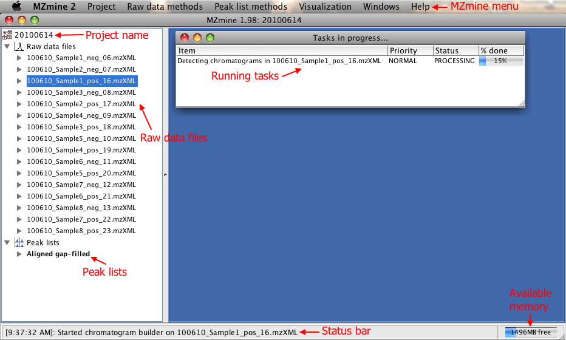

Usage and workflow
Starting MZmine 2
MZmine 2 can run on any platform which has a Java runtime available (version 1.6 or higher).
A startup script is provided for MS Windows (startMZmine_Windows.bat), Mac OS X (startMZmine_MacOSX.command) and Linux (startMZmine_Linux.sh) environments.
The startup script may be edited to tweak various Java runtime parameters:
- HEAP_SIZE
- The amount of memory allocated for the Java Virtual Machine.
Default value is set to 1GB.
If your computer has more RAM available and you wish to use it for MZmine 2, please change this value.
- NIST_MS_SEARCH_PATH
- The path to NIST database installation (optional, only on Windows)
- R_HOME
- The path to R installation (optional)
MZmine 2 desktop
The following screenshot describes the main components of the MZmine 2 desktop:

Data processing workflow
A typical workflow for processing mass spectrometry data using MZmine 2 consists of the following steps (note that many of these steps are optional and may be skipped):
- Raw data import
- Generation of mass lists (detected ions) for each scan using the Mass detector
- (Optional) Mass list filtering for FTMS shoulder peaks
- Detection of chromatograms using the Chromatogram builder
- Deconvolution of chromatograms into individual peaks
- Removing of isotopes
- Identification of
fragments,
adducts and
peak complexes,
- Normalization of retention time using the Retention time normalizer
- Alignment using the Join aligner or RANSAC aligner
- Gap filling using the Peak finder or Same range gap filler
- Normalization using the Linear normalizer or Standard compound normalizer
- Identification using a custom database or online databases
- Data analysis, export, visualization etc..